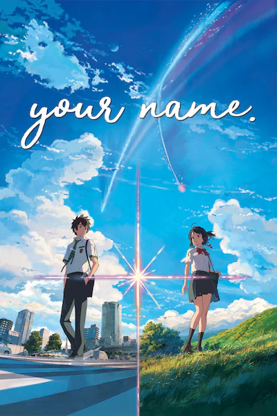
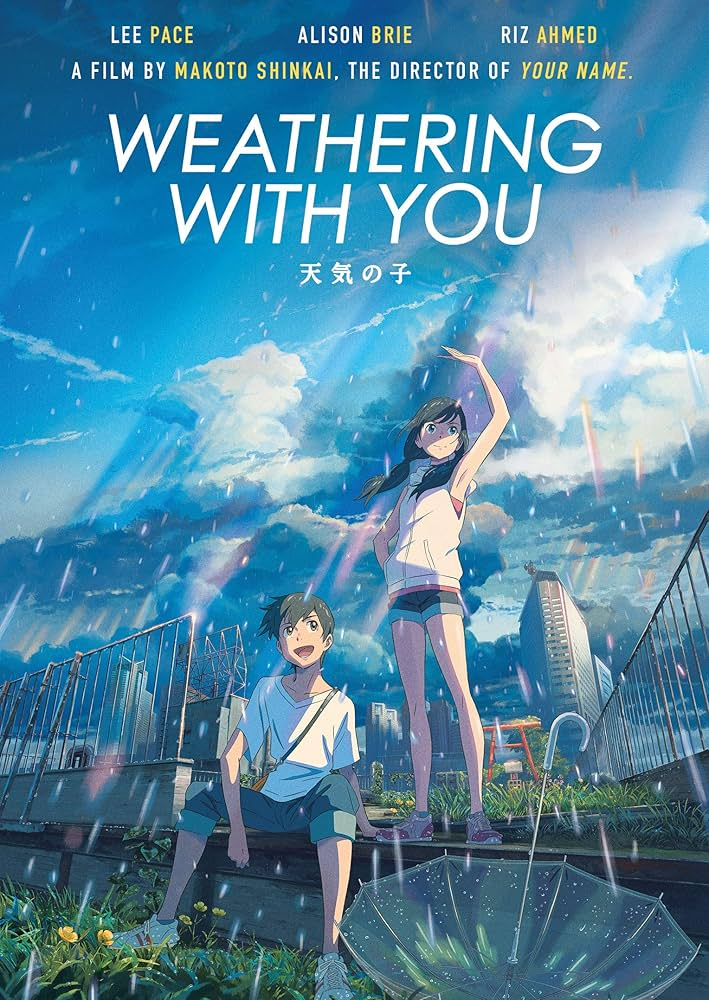
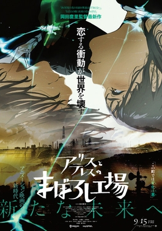
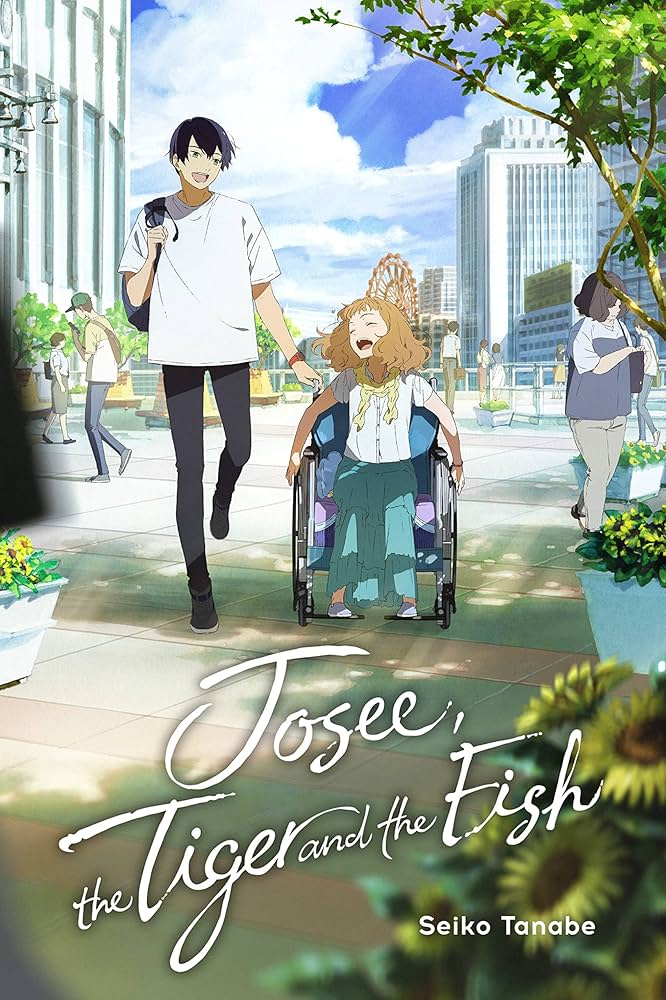
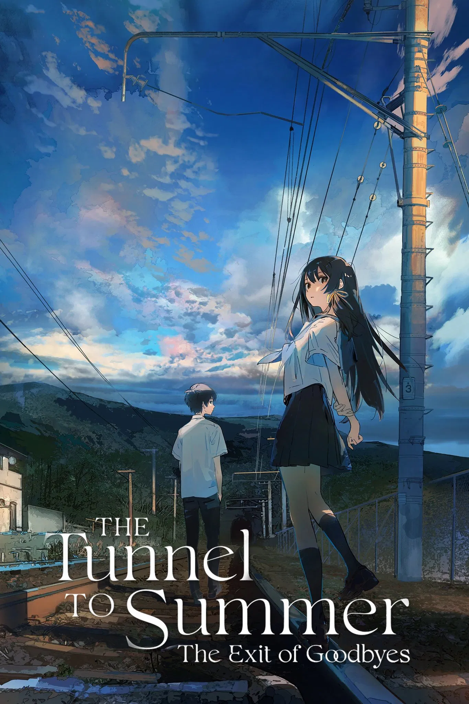

Your Name

Your Name is film about two high school students, Taki and Mitsuha, who inexplicably start switching bodies and living each other's lives. The story follows their attempts to communicate and navigate their new reality while dealing with the emotional and supernatural consequences of their connection, which is tied to the arrival of a comet.
Weathering with You

Weathering with You follows Hodaka Morishima, a high school runaway who arrives in a perpetually rainy Tokyo and befriends Hina Amano, a girl who can control the weather with her prayers to create sunshine.
Suzume

This film follows 17-year-old high school girl Suzume Iwato and young stranger Souta Munakata, who team up to prevent a series of disasters across Japan by sealing doors from the colossal, supernatural worm that causes earthquakes after being released.
Drifting Home

Drifting Home is about a group of sixth graders who get stranded on an apartment building that floats into a mysterious ocean after they visit it one last time before it's demolished.
Maboroshi (illusion)

Maboroshi is a film about a small town that gets trapped in a timeless, frozen state after a steel factory explosion. The story follows high school student Masamune as he and his friends grapple with this collapsing reality, which leads them to discover a mysterious girl named Itsumi living in the abandoned factory.
Bubble

Bubble centers on a dystopian Tokyo, five years after gravity-defying bubbles have caused catastrophic flooding and isolated the city. Young people, now orphans, survive by using parkour to navigate the ruined city and compete in battles for supplies.
A Whisker Away

A Whisker Away is a film about Miyo, a middle schooler who uses a magical mask to transform into a cat to get closer to her crush, Kento Hinode. The plot follows her as she spends time with him as a cat, but the transformations become increasingly blurry, leading to a loss of her human identity as the line between human and cat begins to fade.
A Silent Voice

A Silent Voice is a film about a former school bully, Shōya Ishida, who tries to atone for his past by reconnecting with and making amends to Shōko Nishimiya, a deaf girl he tormented in elementary school.
My Neighbor Totoro

My Neighbor Totoro is a fantasy film about two young sisters, Satsuki and Mei, who move to the countryside with their father to be near their ailing mother.
Spirited Away

Spirited Away is about a 10-year-old girl named Chihiro who stumbles into a world of spirits, gods, and witches. After her parents are turned into pigs, Chihiro must find a way to work and survive in this strange new realm to save them and return to the human world.
Josee, the Tiger and the Fish

Josee, the Tiger and the Fish is a film about a college student, Tsuneo, who becomes the caretaker for Josee, a young woman who uses a wheelchair. Josee is an imaginative artist who has been kept isolated by her grandmother and Tsuneo helps her navigate the world outside her home.
The Tunnel to Summer, the Exit of Goodbyes

The Tunnel to Summer, the Exit of Goodbyes is a film about two high school students, Kaoru and Anzu, who investigate a mysterious tunnel said to grant wishes. The twist is that every three seconds spent inside the tunnel corresponds to two hours passing outside, meaning a user sacrifices years of their life for a wish.